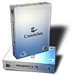

Virtus Consulting
Virtus Consulting se dedica al desarrollo de proyectos de software en general.
Entre las actividades que realizamos están las siguientes:
- Consultoría en tecnología de objetos
- Análisis y diseño orientados a objetos usando Unified Modeling Language
- Liderazgo de proyectos
- Desarollo de software para:
-
- Windows en Visual Basic y Visual C++
- Plataforma .NET en Visual Basic y C#
- QNX en C y C++
- Linux usando C++ y Qt
- Web en ASP, ASP.NET y PHP
Tenemos amplia experiencia en los siguientes sectores:
- Energía
- Transporte
- Financiero
- Hospitalario
Ofrecemos la siguiente solución para el sector de energía:
CommSet - Software de pruebas para sistemas SCADA
Si requiere más información por favor utilice alguna de nuestras formas de contacto